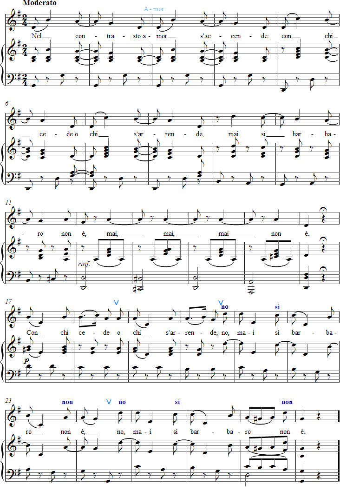

Vaccaj – Exercise 6
Listen to the recording
Sheet music

Exercise 6
Modo sincopato
Syncopation
flares up, but he is never cruel
to those that surrender.
* (Cupid imprisoned / By Metastasio)
Performance instructions
This exercise practises syncopation and introduces tempo rubato. In Vaccaj's time, tempo rubato meant that the singer, against a steady, regular accompaniment, would arrive somewhat early or late on important notes of the melody. This differs from the modern meaning of the term, in which the tempo is varied freely by slowing down (rallentando) and speeding up (accelerando). Because syncopation places an accent on an unexpected part of the bar, tempo rubato can also be seen as a refined variation or modification of syncopation.
Most of the approximately twenty syncopations in the song are supported by the pianist's right hand. Only in bars 12–16 is the singer free to experiment with placing the words mai, non and è so that they do not coincide exactly with the chords in the right hand.
Vaccaj emphasises the fourth syllable in each eight-syllable line of the poem. The resulting conflicts are not particularly interesting, however, because the syncopation disrupts the prosody of the poem in any case.
The word barbaro probably led Vaccaj to choose this text for his most "uncivilised" exercise.
Practice suggestions
When the underlying melody of the exercise, consisting of even quarter notes, is brought out, the "wildness" and "uncivilised" character of the written version become much more apparent.
si - la - sol - re - si - la - sol - re
do2 - si - la - re - do2 - si - la - re
re2 - do2 - si - la - sol - la - fa
Singing the melody as written can easily cause breathing difficulties. A breathing opportunity can be created in bar 5 by omitting the first note of the melody. Vaccaj himself does the same in bar 9. In bar 6, however, no breath should be taken, even though the original text contains a comma at this point. Since Vaccaj gives the final syllable of the word cede its own note, it is also possible to breathe in bar 18. Before the final two phrases, the pianist must simply wait.
This exercise provides female voices with a good opportunity to use the "barbaric" chest register.
The first vowel of the diphthong in mai should be sung as late as possible.
Ideas for interpretation
You can think of the syncopation in bars 1–11 and 17–27 as a person's desperate attempt to flail in every direction while resisting Cupid, or love. Increase the sense of freedom by occasionally singing with only the left-hand accompaniment.
Do not forget to emphasise the word no in bars 20 and 24, the word si in bars 21 and 25, and the word non in bars 23 and 27.
In bars 12–16, the pianist must maintain a steady tempo and not yield to any rhythmic subtleties introduced by the singer. If the tempo becomes too flexible, the song can easily acquire a "pattering" character.
Pronounce the consonants in the word barbaro with enough energy to make the meaning of the word clear.
Forshufvud, G. 1994. Con lieve fiato. Lärarhandledning till Nicola Vaccajs Metodo pratico. Göteborgs universitetet.